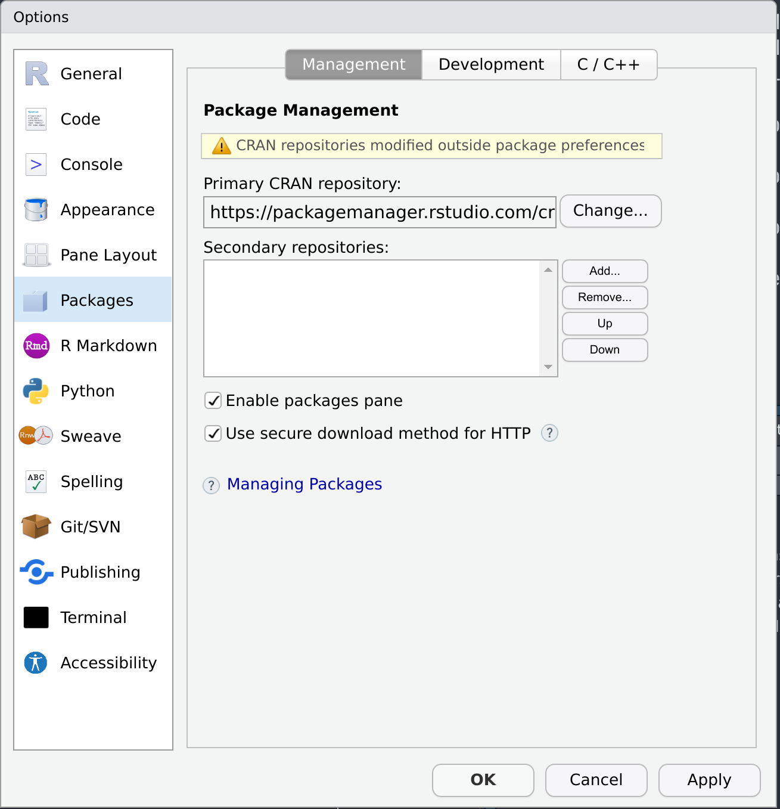

3 Installing R
3.1 Installing the latest R version
These instructions are from how to set up R on Ubuntu.
First, open sources.list:
sudo nano /etc/apt/sources.listThen add this:
deb https://cloud.r-project.org/bin/linux/ubuntu focal-cran40/sudo apt-key adv --keyserver keyserver.ubuntu.com --recv-keys E298A3A825C0D65DFD57CBB651716619E084DAB9
sudo apt install libcurl4-openssl-dev libssl-dev libxml2-dev libfontconfig1-dev libcairo2-devFinally, install R:
sudo apt update
sudo apt install r-base3.2 Installing R binaries for Ubuntu
After playing around, I found that the easiest way for me to install binary R packages on my Linux Mint system was to use RStudio Package Manager. To use it, simply add the following line as the primary library repository:
https://packagemanager.rstudio.com/cran/__linux__/focal/latest
After that, simply use install.packages() as you would normally do. If you want to change the location where packages are installed, I recommend this blog post.
3.3 renv
https://support.rstudio.com/hc/en-us/articles/360047157094-Managing-R-with-Rprofile-Renviron-Rprofile-site-Renviron-site-rsession-conf-and-repos-conf
https://github.com/grantmcdermott/renv-rspm
Another version here (for focal):
- https://github.com/rocker-org/rocker/tree/master/r-rspm/focal
or
if (Sys.info()[['sysname']] %in% c('Linux', 'Windows')) {
options(repos = c(RSPM = "https://packagemanager.rstudio.com/all/__linux__/focal/latest"))
} else {
## For Mac users, we'll default to installing from CRAN/MRAN instead, since
## RSPM does not yet support Mac binaries.
options(repos = c(CRAN = "https://cran.rstudio.com/"))
# options(renv.config.mran.enabled = TRUE) ## TRUE by default
}
options(renv.config.repos.override = getOption("repos"))I think this is the thing I should use… However, it looks like that RSPM is not detecting that I am under a Ubuntu-based distro and do not redirect me on the binairy versions of the packages.
if (Sys.info()[['sysname']] %in% c('Linux', 'Windows')) {
options(repos = c(CRAN = "https://packagemanager.rstudio.com/all/latest"))
} else {
## For Mac users, we'll default to installing from CRAN/MRAN instead, since
## RSPM does not yet support Mac binaries.
options(repos = c(CRAN = "https://cran.rstudio.com/"))
# options(renv.config.mran.enabled = TRUE) ## TRUE by default
}
options(renv.config.repos.override = getOption("repos"))Can be set in .Rprofile of the current project or per user using usethis::edit_r_profile().
3.4 Usubg rig
rig a tool to manage different version of R installation on your computer.
To install it (note that the destination path is not the same as the one shown on the rig website because R was installed in /usr/ and not /usr/local/):
curl -Ls https://github.com/r-lib/rig/releases/download/v0.4.1/rig-linux-0.4.1.tar.gz | sudo tar xz -C /usr/Once installed, one can install different versions of R like so:
rig add 4.1.0
rig add 4.2.0Starting RStudio with a specific version of R can be done with:
rig rstudio 4.1.03.5 RStudio
3.5.1 Installing themes
devtools::install_github("gadenbuie/rsthemes")These can be visualized with:
rsthemes::try_rsthemes()